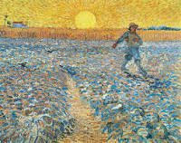
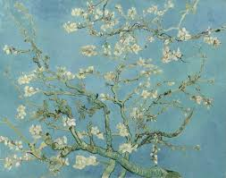
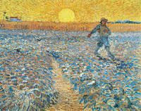
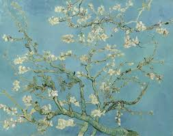

Vincent Van Gogh
Vincent Willem van Gogh è stato un pittore olandese. Fu autore di quasi novecento dipinti e di più di mille disegni, senza contare i numerosi schizzi non portati a termine e i tanti appunti destinati probabilmente all'imitazione di disegni artistici di provenienza giapponese.


 


